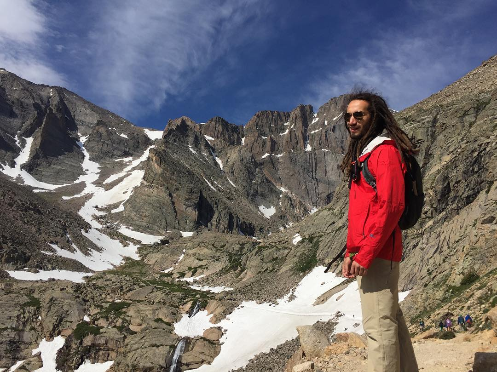

I am currently a student at the University of Kansas studying Computer Science minoring in Communication Studies. I am currently looking for an internship for the summer of 2018. I have a passion for nature and sustainability. Some of my current obsessions include: being vegan, reusable straws and ice cubes, yoga, bicycle messengers, fixed gear racing, long distance thru hikes, Rick and Morty, and making people feel welcomed.
Last summer I interned with a IoT company based in Lawrence, KS that specializes in smart home devices called Iris by Lowe's. I was integrated as a WebUI Developer and worked on the scrum team that included remote developers in order to improve the Iris Web App. Over the course of the summer, I successfully submitted over 20 pull requests that were approved and implemented into production. The most important thing that I learned from the summer was the professional development process and workflow. It was very new to me to be working on such a large scale project that effected thousands of people who use the product every single day. One of the best things that I did over the summer was visit a Lowe's store and put together a tiny house equipped with Iris smart home products. I got to educate the store manager on how to use the app and how to personalize the devices to interact with the environment. It was rewarding to be able to actually see how my work effects people's lives and made me understand the importance of my code.
For the fall, I was asked to return as a part time intern from the company I worked at over the summer, Iris by Lowe's. I am now on a scrum team with two other interns on the platform side. The major difference from the work I did over the summer is that I am now away from WebUI and into working with the large user databases doing research in optimization and practicality. We are currently doing proof of concepts for many different projects the company wants to pursue but doesn't know how much work it might take or how they want to implement it to the work they already do. I find it very exciting to be working in the experimental stage of a company and able to help figure out what direction the company wants to move in. I feel like with this experience, I am a more well rounded programmer to be able learn and apply WebUI and now the same for Platform development.
October 2016 - Present
As a founding father of this fraternity, I was given the opportunity to set the tone for a greek life organization and define what kind of men this fraternity promoted. As part of establishing ourselves as a fraternity I took on the role of Website lead, creating the KU Chapter's website.
August 2015 - Present
I serve as Secretary for ACM being the person of contact for the organization as well as having the responsibility of informing and connecting with people about ACM. ACM is a international organization with the motto, "Advancing Computing as a Science and Profession".
August 2017 - Present
As an Engineering Ambassador, I get to utilize my communication skills and connect with potential students sharing what I love about the School of Engineering at the University of Kansas. My primary responsibilities include giving tours and helping out with recruitment events.
August 2016 - Present
I am currently the EECS (Electrical Engineering, Computer Engineering, and Computer Science) representative for FAC. FAC's main purpose is to equally distribute funds to student organizations. We hold four quarterly meetings where student organizations present us with their budget and requested amount of money. We then, as a board, determine how to allocate funds.
August 2015 - December 2016
Upon entering college, I aimed to challenge myself and get involved with something that I have never done before; pushing myself outside my comfort zone. I took trips to Arkansas, Colorado, and Kentucky to climb some of America's most beautiful rock faces. Along the way I met some really amazing people from all disciplines and got a chance to explore my love of nature.
August 2016 - Present
I am currently the President of the PLCs and focused on restructuring the organization. We are a group of students passionate about learning and applying leadership. To do this we meet one-on-one with students who are looking to get involved but don't know where to start in order to help guide them in the right direction. We also hold leadership workshops, icebreakers, and team building exercises for student organizations. Every year we put on a leadership conference for all KU Students and people in the community.
August 2016 - Present
As an RA, I oversee and mentor 60+ students who live on my floor along with another RA. I strive to build a healthy community that promotes building organic friendships. Through a weekly floor tradition of game night, planning monthly activities, and mediating conflict, this is possible.
August 2015 - Present
The SELF Program is a highly competitive four-year program that accepts less than 10% of applicants. The program is built on the mission to produce engineering students who are strongly goal-oriented and bring business skill and vision needed to guide the corporations of tomorrow. Throughout my four years, I will aquire skills that build all seven pillars of the program: Engineering, Business, Interpersonal, Entrepreneurship, Management, Communication, and Leadership.